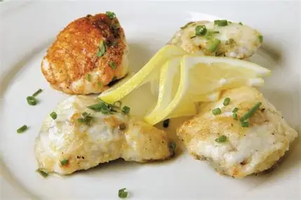

Blanc, R. (n.d.). Monkfish with lemon dressing. BBC Good Food. Available at: https://www.bbcgoodfood.com/recipes/monkfish-lemon-dressing (Accessed: 27 September 2025)

Ingredients
4 boneless monkfish medallions, about 140 g / 5 oz each
1 stalk lemongrass, bashed and finely chopped
4 lime leaves, chopped
1 teaspoon lemon thyme leaves
5 tablespoons extra virgin olive oil, plus extra for frying
A handful of wild rocket (arugula) leaves, to serve
Saucepan (for cooking zest & sugar, making the dressing)
Non-stick frying pan (for cooking the monkfish)
Strainer or sieve (for draining cooked zest)
Spoon / spatula (for mixing)
Serving plates
Directions
Marinate the monkfish: Place the monkfish medallions in a bowl with the chopped lemongrass, chopped lime leaves, lemon thyme leaves, and olive oil. Cover and chill for 6 hours.
Make the lemon dressing
Chop the lemon zest strips into small dice and drop them into a pan of boiling water. Bring back to the boil, then drain.
In a small saucepan, cook the blanched lemon zest with the sugar in 140 ml water for about 5 minutes.
Drain the cooked zest. Then mix it together with the remaining dressing ingredients (olive oil, lemon juice, ground coriander seeds, black onion seeds, currants, almonds, chopped fresh coriander). Add 2 tablespoons water if needed. Taste and season.
Cook the monkfish
About 20 minutes before serving, remove the monkfish from the marinade, and lightly season.
Heat some olive oil in a large non-stick frying pan over medium heat. Fry the medallions 4 minutes on each side until golden brown.
Remove from the pan and let them rest in a warm place for about 4 minutes.
Gently warm the lemon dressing (if it cooled), adding more water if needed to adjust consistency.
Spoon the dressing over the monkfish and around the plate.
Scatter wild rocket leaves over/around the fish and serve.